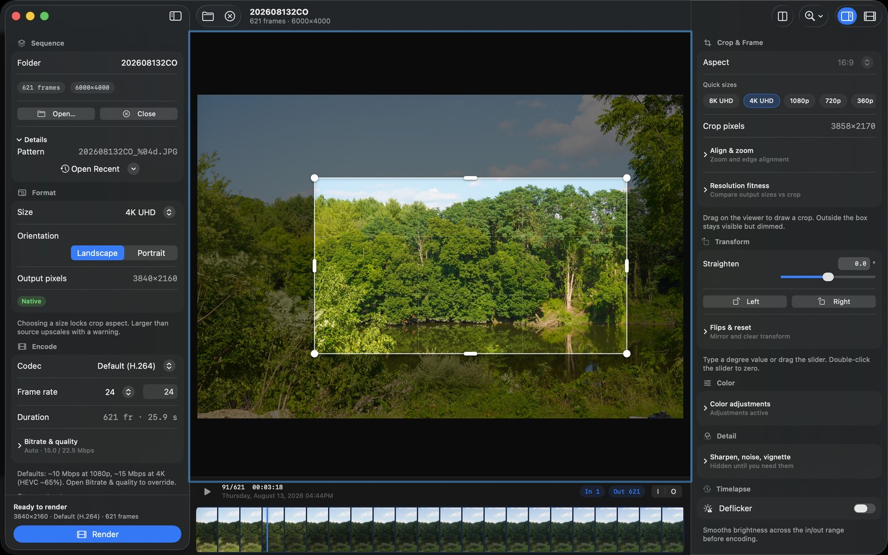
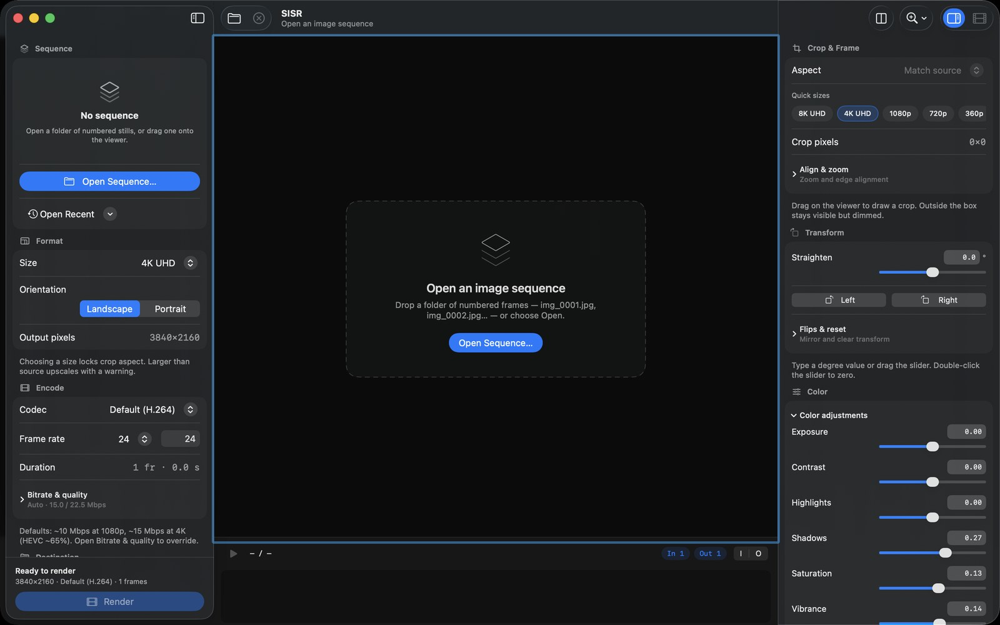
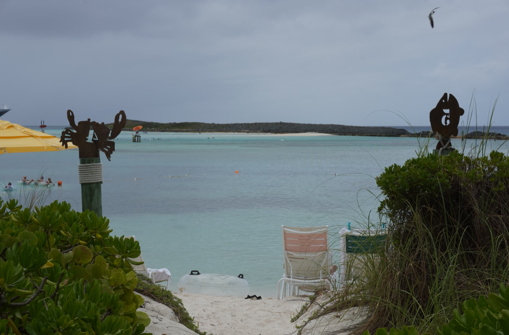
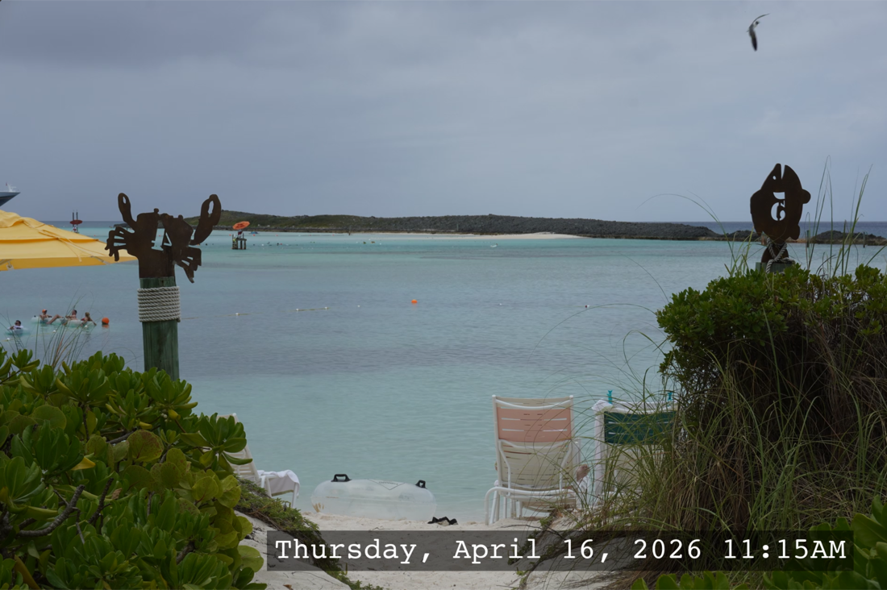
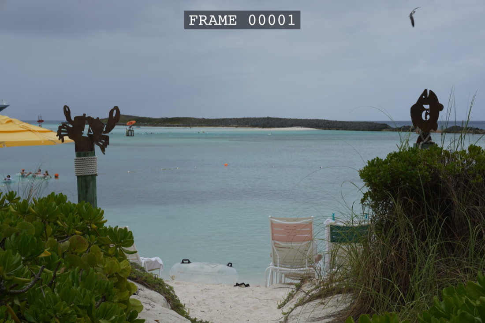
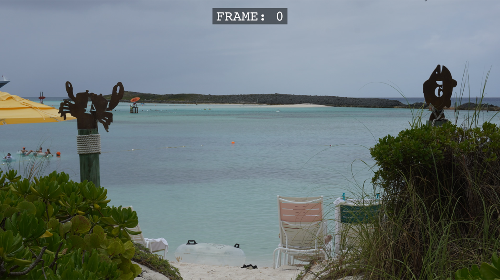

Live preview & filmstrip
Scrub frames with a thumbnail filmstrip, set in/out points, and see crop and color updates as you work.

Native macOS app
SISR (Simple Image Sequence Renderer) is a free, open-source Mac app for photographers and creators. Open a numbered stills folder, preview the sequence, crop and grade, then export MP4, MOV, or GIF — with optional date overlays and sizes ready for Instagram, HD, or 4K.
On Releases, grab the native macOS build (for example SISR-native-*-macos-universal.zip or the latest App Store–style zip). Unzip and move SISR.app to Applications.
Three panes: sequence & encode on the left, live viewer and filmstrip in the center, crop and color on the right — powered by SwiftUI and AVFoundation.




Scrub frames with a thumbnail filmstrip, set in/out points, and see crop and color updates as you work.
Interactive crop handles, straighten with a slider or typed degrees, 90° rotate, and quick sizes from 8K to 360p — including portrait for social.
Exposure, contrast, highlights, shadows, saturation, plus optional sharpen, noise reduction, and vignette — grouped so the inspector stays calm.
H.264 (and more) with auto bitrates sized for 1080p and 4K, or open Bitrate & quality to override. Deflicker analysis reports progress before you render.
Burn in capture date from camera metadata when available — useful for builds, gardens, and trips.
Presets for vertical social (9:16), HD, and 4K. Crop diagrams show how Keep top / Center / Keep bottom line up with the photo.
Real still frames from SISR — overlays and crop presets as they appear on screen.




Download SISR.app, open a folder of numbered stills
(name_0001.jpg …), set size and encode options, then click
Render.
Also available: the original Python GUI/CLI for batch folders and automation — see the classic guide and README on GitHub.